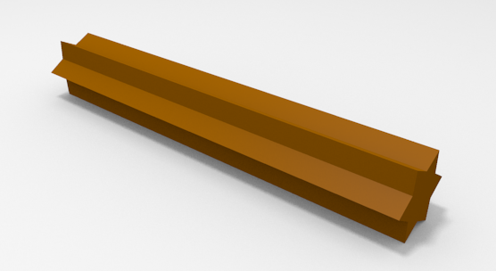
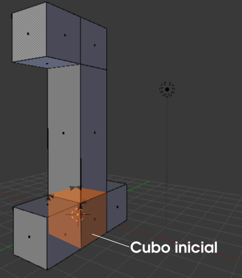
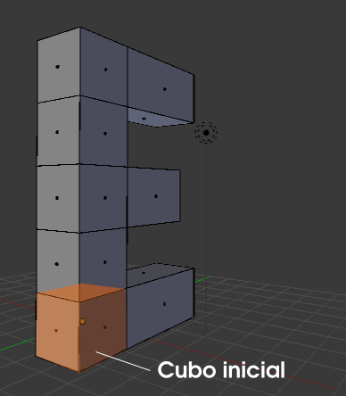

Extrusión
Sin la extrusión, las técnicas de modelado 3D quedarían en un estado de verdadera precariedad. Sin duda esta técnica es la más poderosa con la que vamos a contar. Para el recién llegado la realización de la primera extrusión es un momento casi mágico, así que no lo estropearemos. Vamos de lleno a realizarla.
Partimos del supuesto de encontrarnos con el cubo por defecto, en Modo Edición  y con una cara seleccionada
y con una cara seleccionada  . Colocamos el puntero del ratón cerca de esa cara y pulsamos la tecla "E"; acto seguido desplazamos el ratón.
. Colocamos el puntero del ratón cerca de esa cara y pulsamos la tecla "E"; acto seguido desplazamos el ratón.
Como siempre, podemos concluir la edición con clic izquierdo o "Intro".
¿Qué ha ocurrido?. Blender ha conseguido, en una sola edición:
- Separar de la malla la cara seleccionada.
- Desplazarla.
- Construir las caras necesarias para dejar la malla cerrada.
En realidad el término extrusión se utiliza en determinados procesos de fabricación de elementos metálicos, cerámicos... y cuyo ejemplo más cotidiano sería una máquina de hacer churros. Al pasar un material por un orificio con determinada forma, obtenemos un sólido definido por ese perfil.
Extrusión por menú
Como en el resto de las ediciones existe la posibilidad de ordenar la extrusión por menú (editor Vista 3D en Modo Edición  ). En esta ocasión es Malla/Extruir región; sin embargo no es nada recomendable debido a que es muy probable que el puntero del ratón se encuentre en un lugar muy poco apropiado al dar la orden.
). En esta ocasión es Malla/Extruir región; sin embargo no es nada recomendable debido a que es muy probable que el puntero del ratón se encuentre en un lugar muy poco apropiado al dar la orden.
Ejercitación
Hay un grupo de alumnos, 1ºE, para el que vamos a preparar una plantilla destinada a alguna actividad. Nos proponemos una cabecera con una estética 3D.
Realiza el modelado del número "1" partiendo de un cubo (señalado en naranja) usando extrusiones ("E") (nosotros hemos mantenido pulsada la tecla "Control" durante el desplazamiento para conseguir unidades iguales).
Ahora añade un nuevo cubo a la escena y realiza del mismo modo una letra "E".
Una composición final podría ser esta.